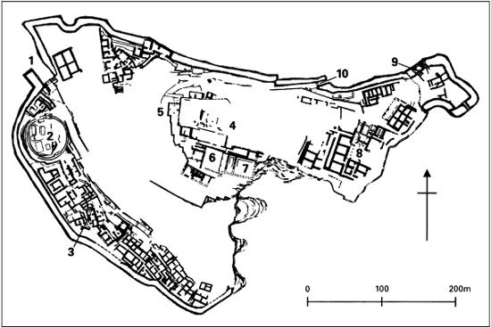

They stick masks on our face, of tragedy or comedy. We have no mirrors to see ourselves in.
(From Oktay Rifat’s Agamemnon I, translated from the
Turkish by Richard McKane and Ruth Christie)
Igazed on the face of Agamemnon’—so runs the abbreviated headline-grabbing version of a message telegraphed in November 1876 by an overexcited and deeply mistaken Heinrich Schliemann, self-made Prussian multimillionaire businessman turned self-made ‘excavator’, to a Greek newspaper. For an amateur driven by the ambition to find the real-life counterparts of Homer’s characters the identification was not just seductively tempting but inescapable. For the Mycenae of Homer’s epic Iliad was adorned with the personalized, formulaic epithet ‘rich in gold’, and Agamemnon was the great High King of Mycenae, by far the most powerful of the regal lords who banded together to rescue the errant wife of Agamemnon’s brother Menelaus from the adulterously fey clutches of Paris (also known as Alexander), a prince of the royal house of Troy. Schliemann had of course already dug there too, indeed could rightly claim to have found at Hissarlik overlooking the Dardanelles on the Asiatic side the only possible site of Homer’s Troy—if indeed there ever was a precise and uniform, real-world original of that fabled ‘windy’ city. But what he and his team of Greek workmen had in fact discovered at Mycenae, in one of the six hyper-rich shaft-graves enclosed within a much later (c.1300 BCE) city-wall, was a handsome death-mask of a neatly bearded, compactly expressive adult male datable c.1650 BCE, well before any sort of Homeric Trojan War could possibly have taken place (Plate 4).
More soberly, accurately, and professionally, if also just a little romantically, Mycenae is the major Late Bronze Age city in the Argolis region of the north-east Peloponnese that has given its name to an entire era: the ‘Mycenaean’ Age. This is thanks to a combination of archaeology and Homer, mainly the former. As we have seen, archaeology and philology between them tell us that in about 1450 BCE Cnossos was overwhelmed by Greek-speaking invaders from the north. These warrior communities had evolved a culture based, like that of Late Bronze Age Crete, on palaces. But whereas the ‘Minoan’ culture looks to have been strikingly peaceful or at least internally harmonious, the palace-based rulers of Mycenae and other mainland Mycenaean centres north and south of the Corinthian isthmus (Thebes, Iolcus, Pylus) were notably bellicose and liked to surround themselves with huge walls (those of Mycenae were over 6 metres thick). Whether or not the rulers themselves were literate, they had their archives kept for them in the primitive bureaucratic form of Greek script known prosaically as Linear B (deciphered as Greek as recently as 1952: see previous chapter). The well-known publishing house of Thames & Hudson once included ‘The Mycenaeans’ in their ‘Ancient Peoples and Places’ series (an accessible study by Lord William Taylour). But the Mycenaeans were not a ‘people’ in any authentic, organic, anciently attested sense.
Moreover, though Greek in language, the civilization of Mycenaean Greece was in most other, basic respects a provincial outpost of a Middle Eastern culture whose epicentres lay in Egypt, Syria, and Iraq. The imposing Lion Gate entrance to the citadel (Plate 3) recalls Hattusas of the Hittites or even Babylon; and the beehive, corbelled, drystone tombs known as the Treasury of Atreus (Agamemnon’s father) and the Tomb of Aegisthus (lover of Agamemnon’s wife Clytemnestra) betray an almost Egyptian lust for imposing posthumous longevity. Palace-frescoes suggest that the buildings rang to the chants of court-musicians, and so, conceivably, there may have been Mycenaean court-poets or at any rate court-lyricists. But the Linear B texts deciphered thus far at least (from Thebes, Tiryns, Ayios Vasilios, and Pylus as well as Mycenae on the mainland, and from Cnossos and Khania, ancient Cydonia, on Crete) contain not a shred of poetry nor any other kind of literature, and, given their documentary, bureaucratic function as temporary records of economic data mainly for tax-purposes, are hardly likely to yield such in the future. (It is, not incidentally, by accident not design that the Linear B tablets were preserved: the fires that consumed the palaces at Mycenae and elsewhere in c.1200 BCE baked them to an imperishable hardness.)
In short, Mycenaean culture and society represented, in Hellenic retrospect, a false start. Ironically, in a way, the best possible witness to the gulf between the world of the palace and that of the polis are the very epic poems—the Iliad, the Odyssey, and some others collectively known as the ‘epic cycle’—that have been cited to prove the relationship of direct, unbroken, civilizational descent. Ostensibly, indeed, the epics do purport to describe a long-lost, far superior civilization of the sort that the visible remains of Mycenae and other Late Bronze Age capitals evoked. Yet what Greek audiences of the eighth and seventh centuries BCE—the era, that is, when the epics achieved their finished, monumental form—imagined to be colossally huge palace establishments paled by comparison with the real thing, as that was revealed by means inaccessible to the Greeks, namely archaeology, art-history, and linguistics. For example, Homer’s audiences were assumed to think of fifty slaves as a suitably vast holding for a heroic king of yore, when actually a Mycenaean palace of the thirteenth century BCE had been able to command the forced labour of hundreds if not thousands of do-er-oi (the Mycenaean version of classical Greek douloi, meaning ‘slaves’). And, as noted in the previous chapter, later Greeks could not believe that Mycenae’s massive walls had been constructed by mere, ordinary mortals.

Fig. 1. Citadel of Mycenae (principal excavated structures): C. Gere Tomb of Agamemnon (Profile, 2006) 182–3. Key: 1 Lion Gate 2 Grave Circle A 3 Cult centre 4 Palace 5 Palace entrance 6 Court 7 Megaron 8 House of Columns 9 Cistern 10 Postern gate
This is not of course to deny all cultural continuity between Mycenaean and historical Greece: crucially, the names of several members of the Olympian pantheon occur already in the Linear B tablets, and historical Greek myth unerringly focused its imaginings on major Mycenaean centres. But Mycenaean palace-religion was a far cry from historical Greek temple-religion. For a start, there were no actual temples of Athena like the one imagined in the Iliad to have stood at Troy before the late ninth century at the earliest. The roots—ideological as well as physical—of that cardinal structure (naos in Greek; a shrine or sanctuary was hieron) can be traced back no further than the twelfth century BCE, whereas in Mycenaean Mycenae, as it were, the palatial cult-centre was more akin to a private chapel in an English great house of the early modern era than to a public religious space serving an entire community. (On a tasting note: it would appear from scientific analysis of organic remains found in a large jar from the Room with the Fresco in that intramural palatial cult-centre that the celebrants drank their wine flavoured with pine resin, even as a proto-retsina perhaps.)
Nor has archaeology anything like proven, as yet, that anything much like a ten-year siege of non-Greek Troy by a coalition of mainland and island Greeks under a high king of Mycenae really occurred—for all that Hissarlik, the site of an important Anatolian city on the Hellespont (Dardanelles), with links as far east as the mighty Hittite empire in the thirteenth century, is undoubtedly Homer’s Troy, the focal point onto which Homeric Greek imaginings were projected. Likewise, the idea of a grand military coalition of Greeks corresponds to precisely what Greeks between about 1200 and 700 BCE could not possibly have achieved—indeed, never actually achieved at any time in their real history, not even under Alexander the Great. It has been well said that the creation of epic and saga presupposes the ruin of an earlier civilization, but that does not mean that the new artistic creation will be a historically faithful copy or mirror of its supposed original. It has also been very well said that the world of Homer is immortal precisely because it never existed as such outside the fertile imaginations of the extended succession of poets who over those five long centuries between about 1200 and 700 BCE created and elaborated a formulaic oral tradition, and then—was this the achievement of a single poet of genius later known as Homer? or of two such, conflated?—crystallized elements of that diverse and redundant tradition in two incomparable, narratively focused monumental epics. As many as seven Greek cities later claimed Homer as a favourite native son; all that is virtually certain is that he—or they—will have hailed from the East Greek culture-area. For it was from here that the artificial Homeric dialect—one never spoken outside the context of an epic recitation—drew the largest portion of its wellsprings, namely the Ionic dialect of Greek (to which we shall come back in Chapter 5).
To return from fiction to fact, round about 1200 BCE the wealthy centres of Mycenaean Greek civilization came cataclysmically crashing down (the doubtless multiple causes are still disputed). There ensued from the eleventh century to the ninth BCE something of a Greek ‘Dark’ age, dark to us not least because it was illiterate (except on Cyprus, where a descendant of Linear B syllabic script was deployed), but also dark objectively speaking, in the sense that there were many fewer settlements, with much smaller populations, more widely scattered and technologically impoverished. Of course, there are isolated exceptions, Lefkandi on the island of Euboea being among the most notable; and one harbinger of a brighter future was the beginning of the switch from bronze to iron for crucial classes of edged implements. But darkness generally ruled. The Linear B script itself perished along with the hierarchical sociopolitical structure to which it had been symbiotically attached. Mycenae itself, like Cnossos, survived physically into the historical period, despite more than one phase of destruction, but it did so only as a shadowy avatar of its Bronze Age progenitor. The lower town of contemporary Tiryns, not far away from both Mycenae and Argos (Chapter 4), happens to preserve the shabby and poky habitational remains of this twilight postpalatial era rather better than does Mycenae itself.
We today may find the might of Mycenae in its Homeric re-imagining very impressive, but pity the poor Mycenaeans, the historical inhabitants of the city of post-Bronze Age historical Mycenae, listening to endless epic recitations and ever vainly hoping that a little of Agamemnon’s aura would rub off on them if only they worshipped hard and often enough at the Agamemnoneion, the historical shrine of the heroized Agamemnon, or at the sanctuary dedicated to another figure of myth, Perseus. (From the latter comes an inscribed capital of c.525 BCE now in the Epigraphic Museum, Athens; some Bronze Age treasures from the royal tombs at Mycenae now repose hard by in the National Archaeological Museum.) But of course hoping against hope was not enough—as the Boeotian poet Hesiod, a contemporary of the final crystallization phase of the Homeric epics around 700, could have told them.
He together with Homer was credited with laying down the basics of classical Greek conceptions of the gods’ and goddesses’ forms, and their functions and spheres of action, especially in his Theogony, a genealogy of the divine, but also in his other major poem Works and Days, which was mainly a farmer’s almanac but carried important political and religious messages besides. In the latter poem (written in the same dactylic hexameter metre as Homer’s epics) Hesiod tells a version of the myth of Pandora (‘All-Gift’), the aboriginal woman and ancient Greek Eve-equivalent, created by Zeus and other gods and goddesses and sent down to earth to punish wretched humans for their presumptuousness. Out of uncontrollable curiosity (a classic flaw of women’s ‘nature’—as chauvinist Greek males saw it), she opened a large storage jar (pithos), which contained both goods and evils, so that it was due to her (and by allegorical implication to the race of Women in its entirety) that the life of hapless mortal men was and eternally is plagued by evils. Only one quality was left shut firmly within the jar when she finally managed to stopper it up again, and that quality was profoundly ambiguous: Elpis—‘Hope’ (or ‘Expectation’).
The hopes of the historical Mycenaeans for a glorious future—or at least some sort of future—for their small city must have been buoyed by their inclusion on the Serpent Column: that is, the Greeks’ victory-monument celebrating their somewhat united repulse of the Persian invasion of 480–479 (see further in detail the Appendix, below). But it was not to be. A disobediently independent-minded Mycenae, potentially always accessible and amenable to pressure from Sparta, was too much of a provocation for nearby powerful Argos—enemy of Sparta, neutral in the Persian Wars—to abide its continued existence. In 468 Argos simply annihilated Mycenae, causing the little polis to cease to be for some considerable time. (Not a unique occurrence in ancient Greece, by any means.)
When a decade later Aeschylus came to write and stage his Oresteia trilogy of tragic dramas (the Agamemnon, Libation-Bearers, and Kindly Ones), he significantly, and rather sinisterly perhaps, relocated Agamemnon’s palace and abode from traditional, Homeric Mycenae to all-too historically real Argos, which just happened—or rather did not just happen—then to be in alliance with his own Athens against their mutual enemy Sparta. Herodotus stated it almost as an eternal law at the outset of his Histories that cities which once had been great had grown small: he could have been—and perhaps was—thinking specifically of the fate of Mycenae.